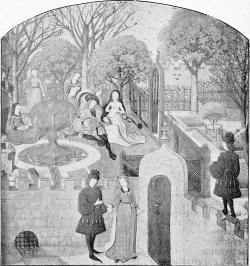

Fourteenth And Fifteenth Centuries. Part 5
Description
This section is from the book "A History Of Gardening In England", by Alicia Amherst. Also available from Amazon: A History Of Gardening In England.
Fourteenth And Fifteenth Centuries. Part 5
§ The following is the recipe of this excellent dish:—"Take thick creme of cowe-mylke, and boyle hit over the fire and then take hit up and set hit on the side:—and then take swete cowe cruddes and presse out the qway (whey), and bray hom in a mortar and cast hom into the same creme and boyle altogether—and put thereto sugre and saffron, and May butter—and take yolkes of eyren streyned, and betten, and in the settynge doune of the pot bete in the yolkes thereto, stere it wel, & make the potage stondynge: and dresse five or seaven leches (slices of bread) in a dish, and plant with floures of violet and serve hit forthe".
" The savour of the roses swote Me smote right to the herte rote," or when crowns of roses and lilies perfume the air, " The swete smel, that in myn herte I find Hath changed me al in another kind".
There were both red and white double roses, as well as the single, and the common dog-rose and sweetbriar. They were planted along the walls, or singly, here and there in the garden, or clambering over the arbour. The double-red (a variety of Rosa Gallica) was the most prized, and as if this red rose was the most lovely thing that could be imagined, it is thus brought into an " Ave Maria " of the early fifteenth century:—
" Heil be thou, Marie, that art flour of alle As roose in eerbir so reed ! " *
Chaucer praises the buds of the double rose, which are more lasting than the quickly-falling petals of the single kinds:
" I love wel sweitie roses rede : For brode roses, and open also, Ben passed in a day or two ; But knoppes † wilen fresshe be Two dayes atte leest or three".
When the red or white rose became the badge of two contending parties, it doubtless depended on the side taken by the owner of the garden which colour prevailed therein. The " fresh redde rose newe, against the sommer sunne," ‡ or the "white rose of England " that is frishe and wol not fade. Both the rote & the stalke that is of great honoure."* Roses were the commonest of all flowers, for weaving into wreaths and garlands :—
* Early Eng. Text Soc. † = buds.
‡ Assembly of Fowles. By Chaucer.
" And on hire hed ful semely for to see A rose gerlond fresh and wel smelling." †
" And also on his head was sette Of roses redde a chapelette." ‡
The periwinkle, with trailing leaves, was suitable for wreaths, and many other flowers were used. Emely in her garden gathered " floures, party whyte and reede, to make a sotil gerland for hire heede." § But these pretty chaplets of flowers were not only worn by beautiful maidens ; we find even the far from prepossessing sompnour, among the Canterbury pilgrims, had " a garland set upon his heed." The annual rendering of a red rose was a common kind of" quit rent," also a flower or seed of the clove pink, or gilliflower, || was frequently the payment. The lily ranked next to the rose in importance, in a garden,||| and vied with the rose for a share in the poet's song. The white lily (Lilium candidum) served to typify all that was good, and pure, or beautiful.
" First wol I you the name of Seinte Cecilie Expoune, as men may in hire storie see : It is to sayn in English, Heven's lilie." **
" That Emelie, that fairer was to seene Than is the lilie or hire stalke grene." ††
" Upon his hand he bore for his delyt An eagle tame, as any lily whyte." ‡‡
* Political poem. 1460-71.—Early Eng. Text Soc, Vol. IV.
† Knight's Tale. ‡ Romaunt of the Rose.
§ Knight's Tale.
|| Among the receipts of Bicester Abbey, 19th Rich. II., for lands and tenements " una rosa rubea recept' di Henrico Bowols de Curtlyngton . . . et de uno g'no gariophili rec' de Rog' o de Stodele "... etc.— Dunkin, Hist, of Bullington and Ploughley.
||| " Lillys " and " roses " are the only flowers mentioned on the gardeners' rolls of Norwich Priory.
The Second Noune's Tale. †† Knight's Tale.
‡‡ ibid.
The yellow flag and purple iris are sometimes indiscriminately spoken of as lilies. In the old medical MS. already referred to, the lilie " that waxit in 3erdis " is described as white as any milk, and the three other kinds of the field and wood, were yellow, "like saffron," and one "blue purple " ; but these are also spoken of as "gladdon" and " greos." Other flowers were brought in from the fields and woods, and perhaps improved by cultivation. The geranium of the flower garden in the Middle Ages was the wild cranesbill, or small herb Robert. The wild scabious and poppy were in the place of the showy annuals and biennials of our gardens of to-day. But many indigenous plants would make no mean show, such as cowslips, daffodils, primroses, foxglove, mullein, St. John's worts, gentian, oxalis, mallow, corncockle, yarrow, campion, centaury, or honeysuckle, all of which we know were grown. There were corners, too, where a peony or tall hollyhock or monkshood flowered, or shaded nook filled with the glossy leaves of the hartstongue, or a portion of the long bed was made bright with pinks and columbines, or sweetly scented with lavender, rosemary, or thyme. In describing the flowers of a garden in Chaucer's time, we must not forget what he called:
" The daysie or elles the eye of day The emperise and flour of floures alle".
It found its way into the trimmest gardens; the greenswards and arbours were " powdered" with daisies. To quote Chaucer again :—
" Home to my house full swiftly I me sped To gone to rest, and early for to rise To seene this floure to sprede, as I devise And in a little herber that I have That benched was on turves fresh y grave I bad me shoulde me my couche make".
Though a daisy plant is supposed to spoil the most velvety turf, yet none would see it banished from our gardens, and all agree in loving the little flower with the poet who said, " Si douce est la Marguerite".
The gardens that were described by Chaucer, although intended for ideal ones, were no doubt but faithful pictures of the gardens of his day, seen through his poet's eye. The garden, "ful of braunches grene," in which Emely was walking when she was watched by the imprisoned knights, was such as might be seen beneath many a feudal castle wall.
Garden, from flemish ms. of the roman de la rose, late fifteenth century. harl. 4425.
" The grete tour, that was so thikke and strong, Which of the castel was the cheef dongeoun Was evene joynant to the gardyn wal".
We have in history a counterpart of this garden of romance, that of Windsor Castle. When James I. of Scotland was there, in captivity, his solace was writing verse, and he has left us this most charming picture of the garden beneath his prison window :
" Now was there made, fast by the Towns wall, A garden fair ;—and in the corners set An arbour green, with wandis long and small Railed about, and so with trees set Was all the place, and Hawthorne hedges knet, That lyf was none walking there forbye That might within scarce any wight espy.
" So thick the boughes and the leaves green Beshaded all the alleys that there were, And mids of every arbour might be seen The sharpe greene sweet Juniper Growing so fair with branches here and there, That as it seemed to a lyf without, The boughes spread the arbour all about.
" And on the smalle greene twistis sat The little sweet nightingale, and sung So loud and clear, the hymnis consecrat Of loris use, now soft, now lowd, among, That all the gardens and the wallis rung Right of their song".
Continue to:
- prev: Fourteenth And Fifteenth Centuries. Part 4
- Table of Contents
- next: Chapter IV. Early Garden Literature